Ozmeka: extending the Omeka repository to make linked-data research data collections for (any and) all research disciplines
2015-06-11
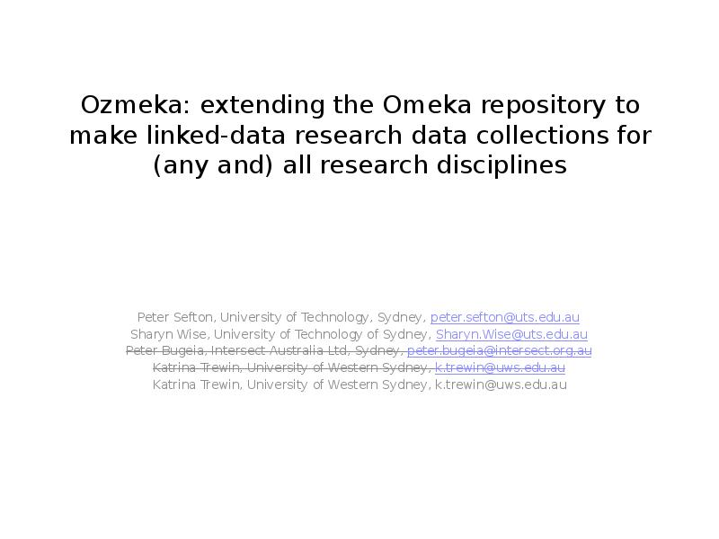There have been some adjustments to the authorship on this presentation, Peter Bugeia was on the abstract but didn’t end up contributing to the presentation, whereas Katrina Trewin withdrew her name from the proposal for a while, but successfully deployed the Farms to Freeways collection and decided to come back in to the fold. The notes here are written in the first person, to be delivered in this instance by Peter Sefton but they come from all of the authors, portions of the script were developed by Sharyn Wise and Peter Sefton for an internal presentation at UTS.
Abstract as submitted
The Ozmeka project is an Australian open source project to extend the Omeka repository system. Our aim is to support Open Scholarship, Open Science, and Cultural Heritage via repository software than can manage a wide range of Research (and Open) Data, both Open and access-restricted, providing rich repository services for the gathering, curation and publishing of diverse data sets. The Ozmeka project places a great deal of importance in integrating with external systems , to ensure that research data is linked to its context, and high quality identifiers are used for as much metadata as possible. This will include links to the ‘traditional’ staples of the Open Repositories conference series, publications repositories, and to the growing number of institutional and discipline research data repositories.
In this presentation we will take a critical look at how the Omeka system, extended with Ozmeka plugins and themes can be used to manage (a) a large cross disciplinary archive of research data about water-resources (b) an ethno-historiography built around a published book and (c) for managing large research data sets in and scientific institute, and talk about how this work paves the way for eResearch and repository support teams to supply similar services to researchers in a wide variety of fields. This work intended to reduce the cost of and complexity of creating new research data repository systems.
Slightly different scope now
I will be talking about Dharmae, the database of water-resources-themed research data, the project to put the book data into Omeka took a different turn and the scientific data repository is still being developed.
### How does this presentation fit in to the conference? Which Conference Themes are we touching on? - Supporting Open Scholarship, Open Science, and Cultural Heritage
-
Managing Research (and Open) Data
-
Building the Perfect Repository
-
Integrating with External Systems
Re-using Repository Content
Things we want to cover:
-
A bit about the research data projects we’ve worked on.
-
How we’ve implemented Linked Data for metadata (stamping out strings!)
-
What about this Omeka thing?
(The picture is one I took of the conference hotel)
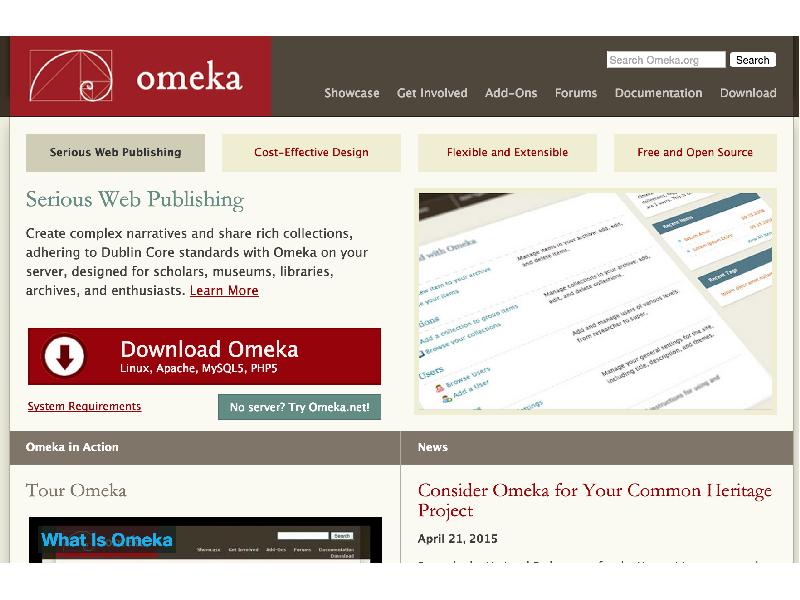What’s Omeka? We like to call Omeka the “Wordpress of repositories” It’s a PHP application which is easy to install and get up and running and yes – it is a ‘repository’, it lets you upload digital objects, describe them with Dublin Core Metadata, and no, it’s not perfect.
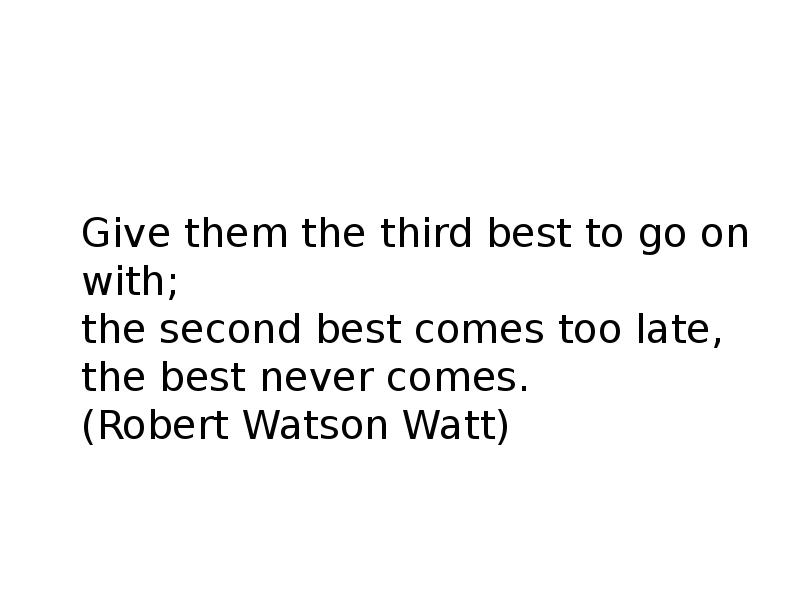The Perfect Repository?
So lets talk about this phrase “the perfect repository”. I have been following Jason Scott at the Internet archive (who would make a great keynote speaker for this conference, by the way and his work on rescuing and making available cultural heritage such as computer-related ephemera and programs for obsolete computing and gaming platforms. He uses the phrase “Perfect is the enemy of done” and talks about how making some tradeoffs and compromises and then just doing it mean that stuff, you know, actually gets done that otherwise wouldn’t.
No, we’re not calling Omeka “third best”, but one of the points of this talk is that instead of waiting for or trying to build the ‘perfect’ research data repository Omeka is a low-barrier-to-entry, cheap way to build some kinds of working-data-repositories or data-publishing websites. I have talked to quite a few people who say they have looked at Omeka and decided that it is too simple, too limited for whatever project they were doing. Indeed, it does have some limitations; the two big ones are that it does not handle access control at all and it has no approval workflow, at least not in this version.
The quote on the slide is via the Wikipedia page Perfect is the Enemy of Good
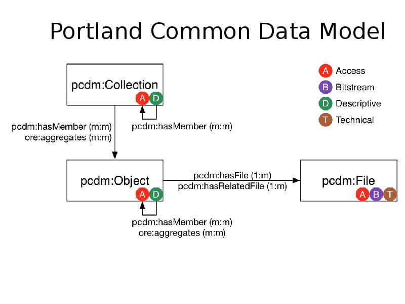
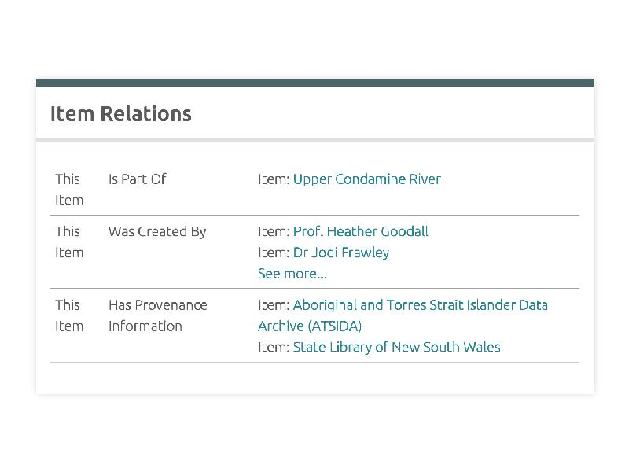Why Omeka? We’ll come back to this – but the ability to do Linked Data was one of the main attractions of Omeka. We had to add some code to make the relations appear like this, and easier to apply than I the ‘trunk’ version of Omeka 2.x but that development was not hard or expensive, compared to what It might have cost on top of other repository systems with more complex application stacks. Another
(Note – if you look at the current version of Dharmae, the item relations will appear a little differently, as not all the Ozmeka enhanced code has been rolled out).
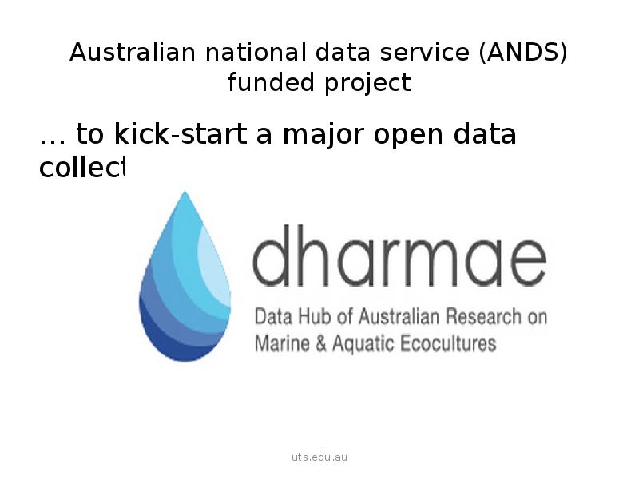I’m going to give you a quick backgrounder on our project by way of introduction: ANDS approached us with a funding opportunity to create an open data collection. Many of you will be familiar with the frustrations of funding rules : our constraint was that we were not allowed to develop software, although we could adapt it.
The UTS team put the word out for publishable research data collections but got little response. Then, thanks to the library eScholarship team, Sharyn met Professor Heather Goodall and Jodi Frawley, who had data from a large Oral History project on the impacts of water management on stakeholders in the Murray Darling Basin – called Talking Fish.
And they had had the amazing foresight – the foresight of the historian- to obtain informed consent to publically archive the interview data.
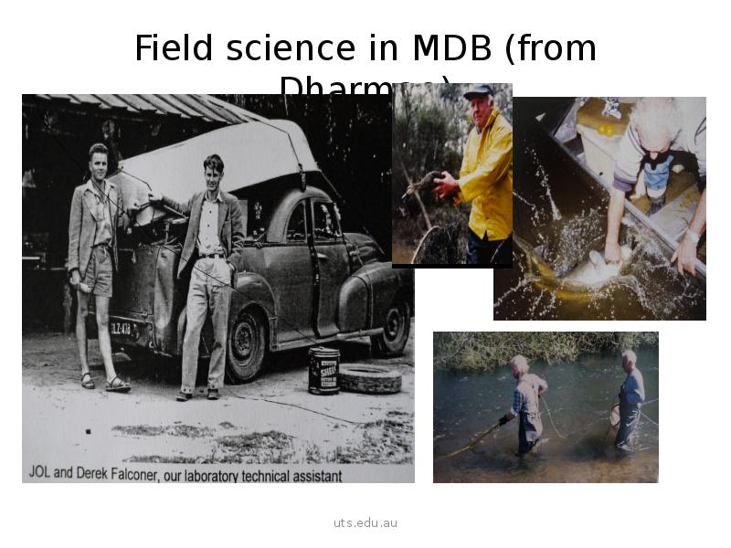In the image above MDB means he Murray Darling Basin, a big, long river system with hardly any water in it. First up I’ll talk about Dharmae. was conceived as a multi-disciplinary data hub themed around water related research, with the “ecocultures” concept intended to flag that we welcome scientific data contributors (ecological or otherwise), as well as cultural data. Because they are equally crucial if we want to research to have an impact on the world.
This position is also supported in the literature of the intergovernmental science policy community and environmental sustainability and resilience research.
One paper expressed it this way - for research to have a transformative impact, its not simply more knowledge that we need, but different types of knowledge.
The literature emphasizes the need for improved connectivity between knowledge systems: those applied to researching the natural world, such as science, and those that investigate socio-cultural practices such as social sciences, history and particularly also indigenous knowledge.
But because these different knowledge systems each come with their own practices and terminologies, we have an interesting information science problem:
How to support data deposit and discovery by users from all disciplines?
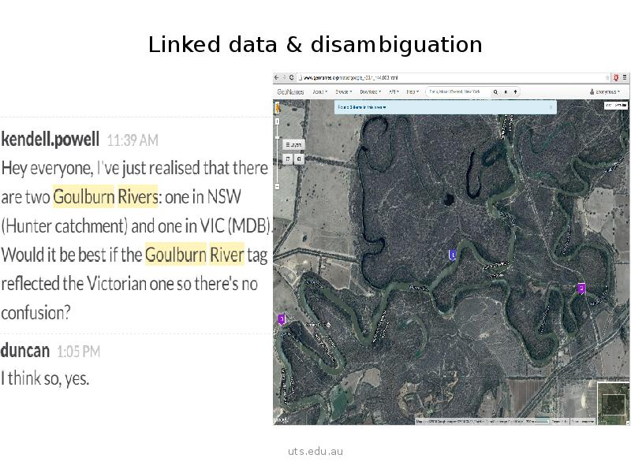Essentially by using linked data. We extended the open source repository Omeka by allowing all named entities (like, places, people, species"/> to be linked to an authoritative source of truth. Lets take location – it is one of the obvious correspondences between scientific and cultural data..
That still doesn’t mean its an easy thing to link on. Place names are rarely unique as we see Kendell noticing above.
But by using authoritative sources, like Geonames, we can disambiguate place names, and better still we can derive their coordinates.
Now we want users of Dharmae who are interested in finding data by location to access it in the way that makes sense to them – and that may not be name.
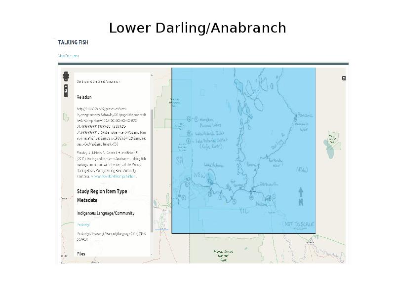In Dharmae readers can search by place name or they can use a map. Here is one of 12 study regions from the Talking Fish data, showing the Lower Darling and Anabranch above Murray Sunset National Park. We georeferenced these regions using a Geonode map server, but we have superimposed the researchers hand-drawn map as a layer on top to preserve the sense of human scale interaction
You can click through from here to read or listen to the oral histories completed in this region, look at photos or investigate the species identified by participants.
You can also search by Indigenous language Community if you prefer.
How else could this be useful?
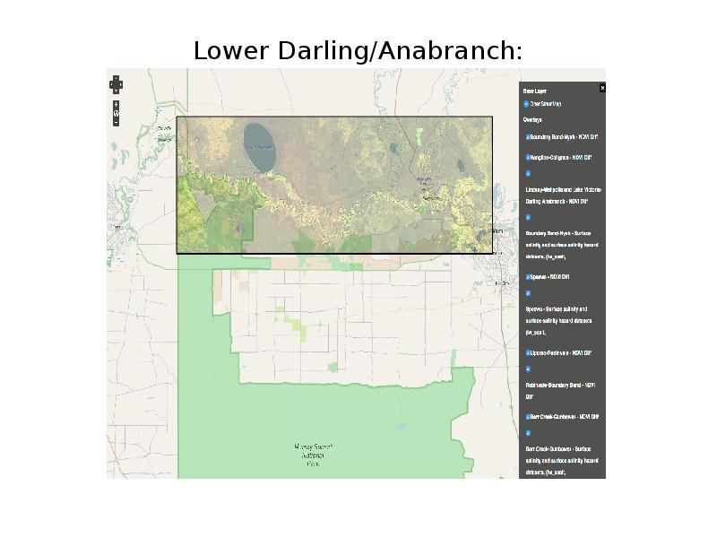It just so happens that we also have a satellite remote sensing dataset that corresponds reasonably well to this region above the national park. It shows the Normalized Difference Vegetation Index for the region or the vegetation change over the decade 1996-2006.
Relative increase in vegetation shows as green and relative decrease as pink.
Could the interviews with participants from that region provide any clues as to why?
I can’t tell you that, but the point is that the more we enrich and link data, the more possible hypotheses we can generate.
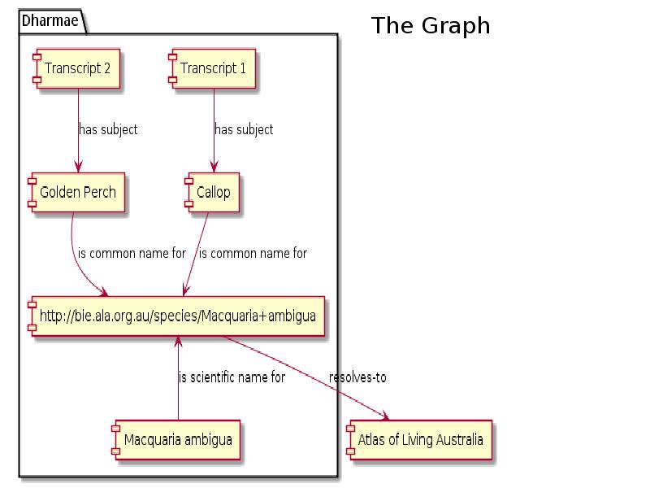Here’s the graph of our solution: We created local records, so that the Dharmae hub could maintain its own set of ‘world-views’ while still interfacing with the semantic web knowledge graph. This design pattern is something we want to explore more: having a local record for an entity or concept, with links to external authorities. So, for example we might use a Dbpedia URI for a person, and quote a particular ‘approved’ version of the wikipedia page about them so there is a local, stable proxy for an external URI, but the local record is still part of the global graph. With the species data, this will allow researchers to explore the way the participants in Talking Fish talked about fish and compare this to what the Atlas of Living Australia says about nomenclature and distribution.
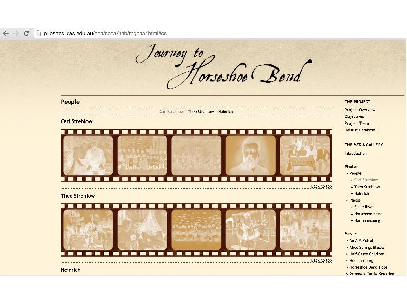From the [Journey to Horshoe Bend Website[(http://pubsites.uws.edu.au/coa/soca/jthb/index.html"/> at the University of Western Sydney: > TGH Strehlow’s biographical memoir, Journey to Horseshoe Bend, is a
vivid ethno-historiographic account of the Aboriginal, settler and Lutheran communities of Central Australia in the 1920’s. The ‘Journey to Horseshoe Bend’ project elaborates on Strehlow’s book in the form of an extensive digital hub – a database and website - that seeks to ‘visualise’ the key textual thematics of Arrernte* identity and sense of “place”, combined with a re-mapping of European and Aboriginal archival objects related to the book’s social and cultural histories.
Thus far the project has produced a valuable collection of unique historical and contemporary materials developed to encourage knowledge sharing and to initiate knowledge creation. By bringing together a wide variety of media – including photographs, letters, journals, Government files, audio recordings, moving images, newspaper, newsletters, interviews, manuscripts, an electronic version of the text and annotations – the researchers hope to ‘open out’ the histories of Central Australia’s Aboriginal, settler and missionary communities.
JTHB research work entailed creating annotations relating to sections of the book text. The existing book text, marked up with TEI, was converted to HTML and the annotations were anchored within the HTML. Plan was to create an Omeka plugin to display the text and co-display or footnote the annotations relating to each part of the text.
Issues
- The existing annotations were incomplete and the research team wished to continue adding annotations and material. This meant that the HTML would need to be continuously edited (outside Omeka), giving rise to issues around workflow, researcher skills, and version control.
- Cultural sensitivities were also a barrier to open publication (not an Omeka issue but a MODC one)
Katrina Trewin is a data librarian, working at the University of Western Sydney. While the Journey to Horseshoe Bend project could not be completed using Omeka, due to resource constraints. Another project was able to be completed. Using Omeka, Katrina was able to build web site around an oral-history data set without needing any development. This work took place in parallel with the work on Dharmae at UTS so was not able to make use of some of the innovations introduced in that project such as enhancements to the Item Relations plugin to allow rich-interlinking between resources.
Katrina’s notes:
Material had been in care of researcher for 20+ years.
- Audio interviews on cassette, photographs, transcripts (some electronic)
- Digitised all the material
- Created csv files for upload of item metadata into Omeka
- Once collections of items were created, then used exhibit plugin to bring material relating to each interviewee together.
Worked well because collection was complete - fine to edit metadata in Omeka but items themselves need to be stable (unlike the JTHB text)
Omeka allows item-level description which is not possible via institutional repository. This could have been done in Omeka interface but was more efficient via csv upload. csv files, bundled item files, readme and Omeka xml output made available from institutional repository record for longer term availability as hosting arrangement is not in place. Chambers, Deborah; Liston, Carol; Wieneke, Christine (2015): Interview material from Western Sydney women's oral history project: 'From farms to freeways: Women's memories of Western Sydney'. University of Western Sydney. http://dx.doi.org/10.4225/35/555d661071c76
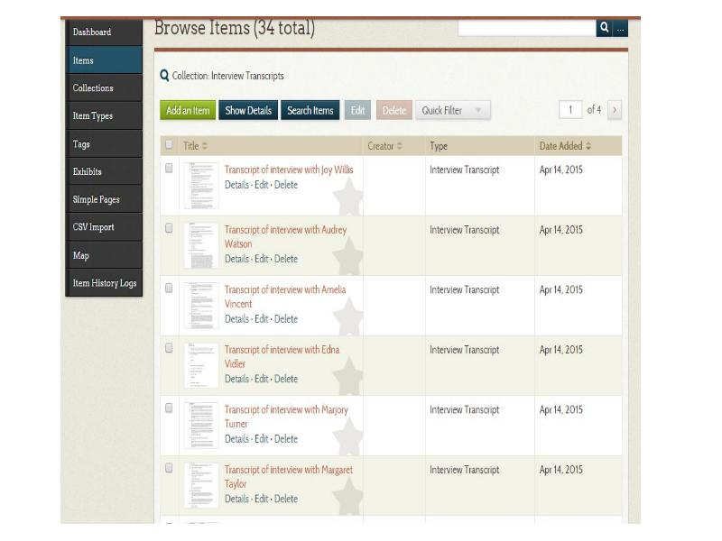 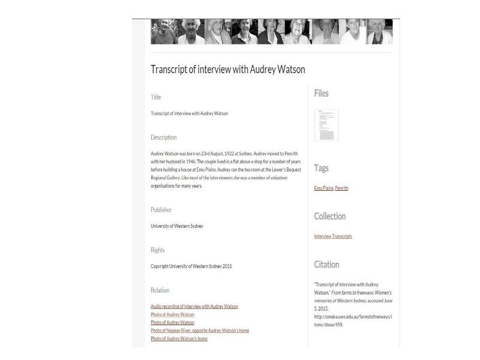 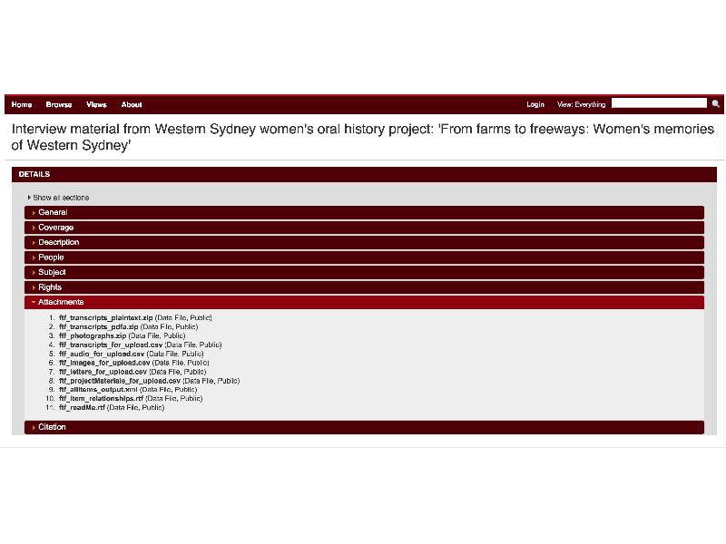Katrina and team have published all the data as a set of files with a link to the [website" src="http://omeka.uws.edu.au/farmstofreeways/"/> , in the institutional research data repository. This screenshot shows the data files available for download for re-use. My team at UTS are doing a similar thing with the Dharmae data.
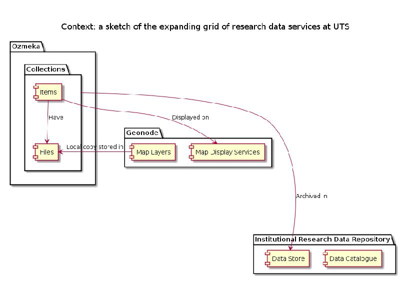 At UTS we are are constructing a growing ‘grid’ of research data services. This diagram is a sketch of how Omeka fits into this bigger picture, showing the geonode mapping service which supplies map display services and can harvest maps from Omeka as well. In this architecture, all items ultimately end up in an archival repository with a catalogue description, as I showed earlier for the Farms to Freeways data.
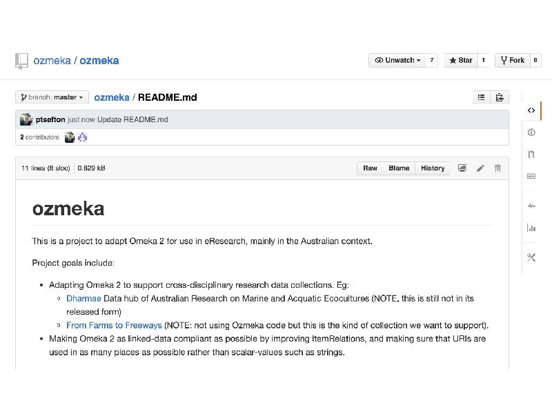 Interested? Check out Clone our Ozmeka github repostiories
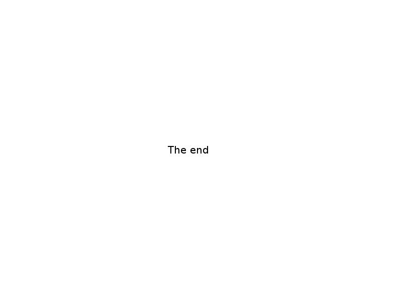 ### Conclusion Omeka is a very simple seeming repository solution which is easy to dismiss for projects that demand the ‘perfect’ repository, but looking beyond its limitations it has some strengths that make it attractive for creating ‘micro repository services’ (Field & McSweeney 2014). Our work has made it easier to set up new research-data repositories that adhere to linked-data principles and create rich semantic web interfaces to data collections. This paves the way for a new generation of micro or workgroup-level research data repositories which link-to and re-use a wide range of data sources.
References
Johnson, Ian. “Heurist Scholar,”2014 http://heuristnetwork.org/.
Kucsma, Jason, Kevin Reiss, and Angela Sidman. “Using Omeka to Build Digital Collections: The METRO Case Study.” D-Lib Magazine 16, no. 3/4 (March 2010). doi:10.1045/march2010-kucsma.
Nahl, Diane. “A Discourse Analysis Technique for Charting the Flow of Micro-Information Behavior.” Journal of Documentation 63, no. 3 (2007): 323–39. doi:http://dx.doi.org.ezproxy.lib.uts.edu.au/10.1108/00220410710743270.
Palmer, Carole L., and Melissa H. Cragin. “Scholarship and Disciplinary Practices.” Annual Review of Information Science and Technology 42, no. 1 (2008): 163–212. doi:10.1002/aris.2008.1440420112.
Palmer, Carole L. "Thematic Research Collections", Chapter 24 in Schreibman, Susan, Ray Siemens, and John Unsworth. Companion to Digital Humanities (Blackwell Companions to Literature and Culture). Hardcover. Blackwell Companions to Literature and Culture. Oxford: Blackwell Publishing Professional, 2004. http://www.digitalhumanities.org/companion/.
Simon, Herbert. “Rational Choice and the Structure of the Environment.” Psychological Review 63, no. 2 (1956): 129–38.
Strehlow, Theodor George Henry. Journey to Horseshoe Bend. [Sydney]: Angus and Robertson, 1969.
![Credits Researchers: Prof. Heather Goodall Dr Michelle Voyer Associate professor Carol Liston Dr Jodi Frawley Dr Kevin Davies eResearch: Sharyn Wise, Peter Sefton, Mike Lynch, Paul Nguyen, Mike Lake, Carmi Cronje, Thom McIntyre and Kevin Davies, Kim Heckenberg, Andrew Leahy, Lloyd Harischandra Library: Duncan Loxton (eScholarship) & Kendell Powell (Aboriginal & Torres Strait Islander Data Archive Officer), Katrina Trewin, Michael Gonzalez Thanks to: State Library of NSW Indigenous Unit, Atlas of Living Australia, Terrestrial Ecosystems Research Network and our funder, ANDS.](img20.jpg)
I didn’t have this slide when I presented, and forgot to acknowledge the contribution of all of the above, and anyone who’s been left off by accident.